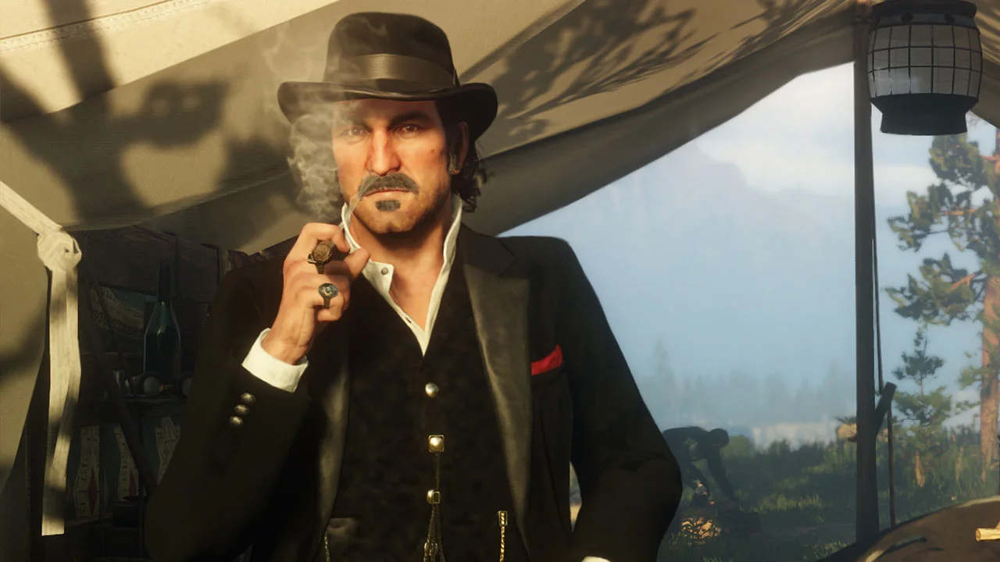
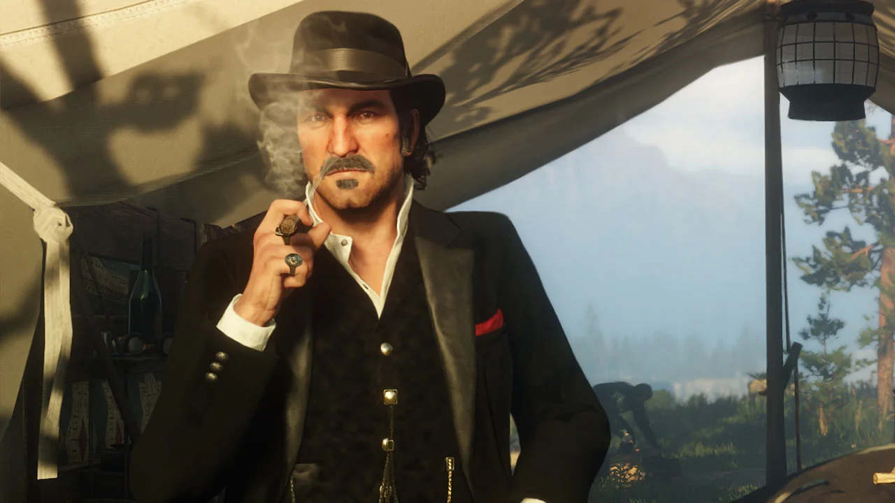

História:
Estados Unidos, 1899. O fim da era do velho oeste se aproxima, e os xerifes caçam as últimas gangues fora da lei. Quem não se rende ou sucumbe, acaba morto. Depois de tudo dar errado em um roubo na cidade de Blackwater, no faroeste, Arthur Morgan e a gangue Van der Linde são obrigados a fugir. Com agentes federais e os melhores caçadores de recompensas no seu encalço, a gangue terá que roubar, assaltar e lutar para sobreviver no implacável coração dos Estados Unidos. Conoirme as divergências internas se acirram e ameaçam separar a gangue, Arthur precisa fazer uma escolha entre seus ideais e sua lealdade com o grupo de fora da lei que o criou. Desenvolvido pela Rockstar Games, Red dead Redemtpion 2 é uma história épica da vida no início da era moderna dos Estados Unidos.
Personagens:
Arthur Morgan
Arthur não nasceu em boas condições de vida, ele perdeu os pais logo no início da vida e foi criado por Dutch. Quando mais velho perdeu um filho, e após essa tragédia ele ainda teve que ver o seu grande amor ir embora de sua vida, porque viver em uma gangue não era bom opção para ela. É fácil afirmar que em nenhum momento a vida foi boa com ele, e que o crescimento em torno de toda criminalidade da gangue Van Der Linde não é um ambiente propicio para o desenvolvimento de uma boa pessoa. Com o desenvolvimento da história de RDR2, eu descobri que não estava apenas controlando mais um personagem de videogame, mas sim convivendo com um humano. Vivenciar a jornada de Arthur se torna uma rotina quando nos apegamos à trama de Red Dead 2. Uma das coisas que aprendemos durante essa aventura é que não estamos na pele de um monstro, e sim de um simples homem cujas circunstâncias da vida e da época em que nasceu o tornaram quem ele é. Em outras condições ele talvez fosse outra pessoa, que ainda cometeria erros, mas seria diferente do que vemos na trama do jogo. A infância é um dos pontos mais importantes no desenvolvimento de uma pessoa, e Arthur não teve isso, conforme vemos em uma conversa do personagem com a irmã em dado momento da campanha.
John Marston
John Marston é um personagem central na série Red Dead, aparecendo como o protagonista principal em Red Dead Redemption e sua expansão não-canônica Undead Nightmare. Ele também é um personagem central e o protagonista secundário em Red Dead Redemption 2. Nascido em 1873 nos Estados Unidos, John foi membro da gangue de Dutch van der Linde até sua dissolução. Após escapar do passado com a gangue, ele finalmente teve a chance de se estabelecer com sua família. John Marston é conhecido por sua personalidade forte e sua busca por redenção. Ele é um ex-fora da lei que se tornou caçador de recompensas e, mais tarde, um fazendeiro. Suas aventuras e desafios são parte essencial da rica narrativa da série Red Dead.
Dutch van der Linde
Dutch é conhecido por sua filosofia e personalidade complexas. Ele é um líder carismático, mas também um homem atormentado pelas mudanças do mundo e pelas lutas internas. Sua gangue, a Van der Linde, enfrenta desafios constantes enquanto tenta sobreviver em um Oeste selvagem em transformação. Sua história é explorada em detalhes ao longo dos dois jogos da série, e sua jornada é repleta de tragédia, traição e dilemas morais. Uma figura icônica no universo de Red Dead, Dutch van der Linde continua a fascinar os jogadores com sua complexidade e ambiguidade.
 
